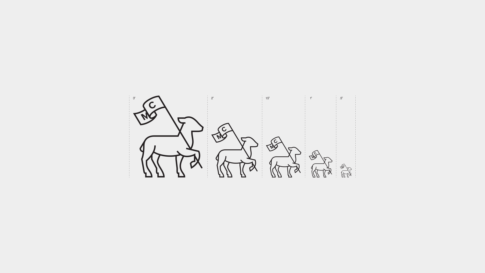
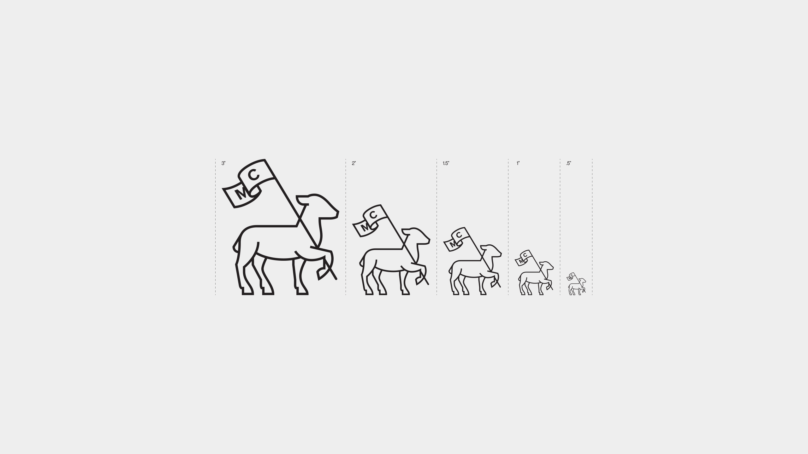
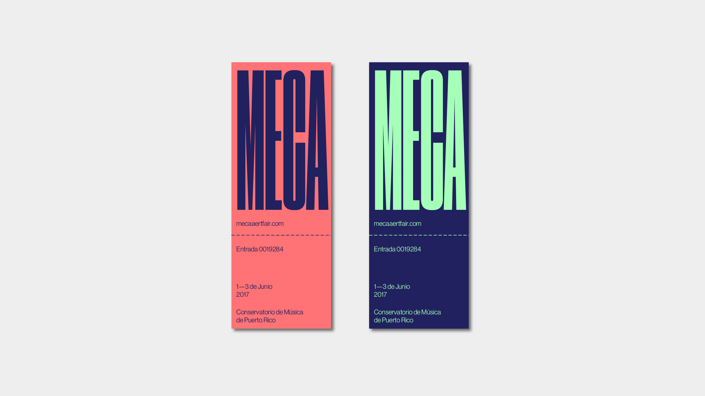
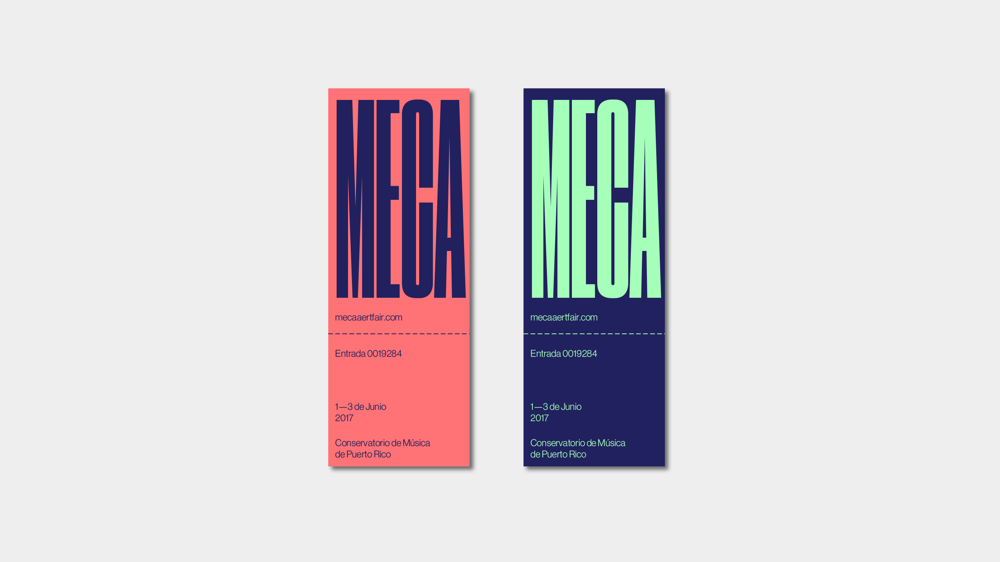

Meca Art Fair '17
Catalogue designed for the exhibitions Corporalities and Chronic(le), both curated by Carla Acevedo-Yates at Fundación Casa Cortés in San Juan, Puerto Rico. The catalogue is divided in two sections,the first one for the collective show Corporalities and the second for Chronic(le), the individual show of Carlos Garaicoa and Eduardo Lalo. Although both exhibitions expose different thematics, they share the same graphic system where typography becomes a constant element.
- Role ......................... Designer
- Creative Direction ........... Luis Diaz
- Team ......................... Luis Vazquez
- Studio ....................... DD-Diseño
 



 
